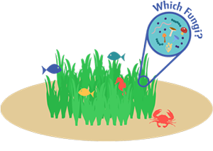
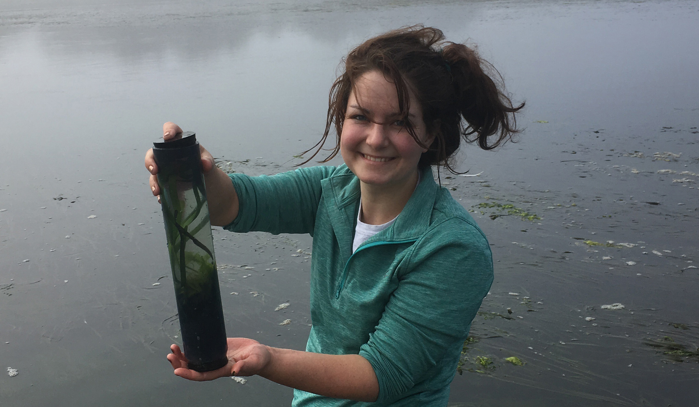

		<!-- Main -->
			<article id="main">
					
				<!-- One -->
					<section class="wrapper style4 container">
					
						<!-- Content -->
							<div class="content">
								<section>
										<header>
										<h3><strong>The seagrass mycobiome
</strong></h3> </header>


<div class="row">

<div class="8u">
<p> The seagrass mycobiome is comprised of all the fungi living on / in different seagrass species. Not a lot is known about the diversity of marine fungi or what role fungi might play in associations with marine plants. For my dissertation, I am investigating seagrass-associated fungi locally (Bodega Bay, CA), globally and between seagrass species. </p>

</div>
<div class="4u">
<a class="image featured special"></a></div>
</div>
		
		<p>Fungi can have beneficial effects on terrestrial plant fitness; for example, mycorrhizae are involved in facilitating phosphorus and nitrogen uptake for their hosts. It is estimated that ~85% of angiosperm species have mycorrhizal fungal associations. Mycorrhizae are fungi that associate with plant roots and facilitate nutrient uptake. Mycorrhizae were previously thought to not colonize aquatic environments, but have since been found in wetlands, estuaries, mangrove forests and freshwater ecosystems. Mycorrhizal associations are believed to be 400 million years old, critical for plant terrestrialization and the basal state for angiosperms – but are thought to have been lost in seagrass lineages. Investigating the relationship between seagrasses and their associated fungi could be potentially transformative to our understanding of the evolution of land plants. </p>
		
		
								<div class="row">
									<div class="8u">	
									<a class="image featured special"></a>	</div>
									<div class="4u">
										<p>In order to survey the taxonomic and functional diversity of seagrass associated fungi, I am utilizing several different approaches including high throughput sequencing of the internal transcribed spacer (ITS) region, metagenomic sequencing and fungal culturing and identification. </p>
									</div>
								</div>
									
												
									
								
							
								</section>
							</div>

					</section>
					
					
					
					
						
										
								
					
			</article>
